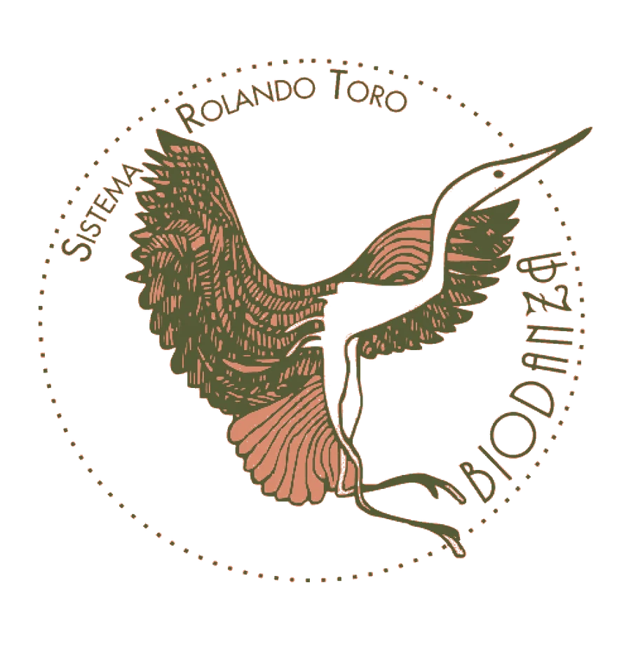

חיוניות
שמחת חיים, אנרגיה ורצון להשתתף בעולם
לתת יותר מקום לחיים

אפשר לנהל ימים מלאים ובכל זאת להרגיש שמשהו חסר. מקום לנשום, להתרגש, להיות ספונטניים ולפגוש אנשים בלי לחשוב כל הזמן איך אנחנו נראים בעיניהם
ביודנסה מציעה מקום להתנסות בזה. דרך מוזיקה, תנועה ומפגש בקבוצה, היא מזמינה אותנו לחקור איך אנחנו מרגישים עם עצמנו, עם אחרים ועם החיים שסביבנו
ביודנסה היא שיטה שפיתח רולנדו טורו, המבוססת על חוויות של תנועה וקשר אנושי. המנחים מציעים תרגילים בליווי מוזיקה, והמשתתפים נותנים להם ביטוי אישי
המטרה היא לטפח חיבור בין התחושות בגוף, הרגש והדרך שבה אנחנו פוגשים אחרים. הדגש הוא על החוויה עצמה ועל מה שמתעורר בנו בזמן שאנחנו משתתפים
בתפיסה של טורו, חוויה יכולה להיות דרך ללמידה ולשינוי. לכך מתייחס המושג ״ויוונסיה״: חוויה שנחווית ברגע הנוכחי ומשלבת תחושה, רגש ונוכחות
אפשר לחשוב על ההבדל בין לדבר על קרבה לבין לחוות רגע שבו מרגישים בנוח ליד אדם אחר. ההסבר חשוב, אבל לחוויה יש איכות משלה
עיקרון נוסף בשיטה נקרא ״העיקרון הביוצנטרי״, המעמיד את החיים במרכז. בשפה פשוטה, זו הזמנה לתת ערך לחיות שלנו, לקשרים שלנו ולכבוד כלפי החיים שסביבנו. אלה רעיונות היסוד של השיטה, ולא הבטחה לתוצאה מסוימת
המודל של הביודנסה מתייחס לחמישה תחומים, המכונים ״קווי חוויה״. אפשר להבין אותם כחלקים בחיים שהתרגול מבקש להזמין ולפתח
שמחת חיים, אנרגיה ורצון להשתתף בעולם
האפשרות להביע את עצמנו, לנסות ולגלות דרכים חדשות לפעול
היכולת לחוות חיבה, חברות, אכפתיות ואמפתיה
בתפיסת השיטה זהו תחום הכולל תשוקה, הנאה וחיבור לזהות המינית. אפשר לדבר עליו בפשטות וברגישות, כחלק מהחוויה האנושית
תחושת קשר לטבע ולמשהו רחב מאיתנו, לצד חוויה של שייכות
אלה תחומי התפתחות במודל של טורו. כל אדם עשוי לפגוש אותם באופן אחר
החיבור ליומיום מתחיל בשאלות קטנות ואישיות
האם אני מרשה לעצמי להראות שמחה? האם קל לי להיות בנוכחות מלאה ליד מישהו חדש? האם אני שם לב למה שנעים לי ולמה שפחות? האם יש מקום בחיים שלי לרוך, למשחק ולסקרנות?
המפגש יכול להיות הזדמנות לחקור את השאלות האלה דרך חוויה. אפשר לשים לב לאופן שבו אנחנו מתקרבים, מהססים, מביעים את עצמנו או נותנים לעצמנו מקום
זו הכוונה שמאחורי התרגול: לפתוח אפשרויות שאפשר להמשיך לבחון גם בשיחה, בחברות, בזוגיות ובמפגש עם מצבים חדשים. הדרך שבה החוויה משתלבת בחיים היא אישית, והיא יכולה להיות הדרגתית
מחקרים על ביודנסה מצאו סימנים אפשריים לתועלת בתחומים כמו רווחה נפשית, מתח ואיכות חיים. עם זאת, סקירת מחקרים שפורסמה ב־2021 מצביעה גם על שונות גדולה בין המחקרים ועל מגבלות בתכנון ובדיווח
לכן נכון לדבר על פוטנציאל ועל הזדמנות להתנסות, ולא על תוצאה מובטחת. הביודנסה אינה תחליף לטיפול רפואי או נפשי כשיש בו צורך
אולי מה שמושך אותך הוא התנועה. אולי האפשרות להכיר אנשים. ואולי פשוט הרצון לפנות זמן למשהו שמרגיש חי
אפשר להתחיל משם, בלי לדעת מראש מה המפגש יפתח עבורך. לשאול, להכיר את המנחים ולהגיע להתנסות